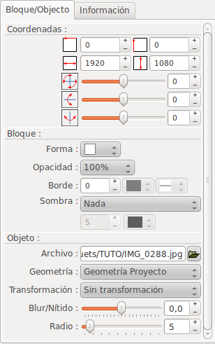

Introducción
La ventana "Propiedades de
diapositiva" permite definir la configuración de las
diapositivas:

Esta ventana se abre haciendo doble clic en la zona de de diapositivas, en la línea de tiempo or by double-clicking the preview zone.
Esta ventana se abre haciendo doble clic en la zona de de diapositivas, en la línea de tiempo or by double-clicking the preview zone.
Descripción de la ventana
Esta ventana incluye numerosas
zonas:
- Las zonas de la izquierda corresponden a la configuración de la diapositiva y sus tomas (planos)
- Las zonas de la derecha corresponden a la configuración de los bloques
A la izquierda, en la parte superior: la zona de las tomas
(planos)
La zona de las tomas (planos) consiste en una barra de
herramientas y una línea de tiempo.
La barra de herramientas de las tomas (planos)

|
Añadir una toma al final de la línea de tiempo |
 |
Quitar actual toma seleccionada |
| Cambiar el orden de las tomas moviendo la toma actual seleccionada un paso a la izquierda | |
| Cambiar el orden de las tomas moviendo la toma actual seleccionada un paso a la derecha |
Remark: It is also possible to change the shots order using Drag and Drop
La línea de tiempo de la toma
La línea de tiempo
muestra las tomas como miniaturas, en el orden en el que se
reproducirá (de izquierda a derecha).
Para cada toma, muestra la miniatura :
Para cada toma, muestra la miniatura :
- Duración de la toma
- Una imagen que representa la toma al final de su duración
Zona de configuración del tiempo de la toma
| Duración de la
toma |
Indicar aquí la
duración para la toma actual seleccionada. Para la última toma de la diapositiva, hay una duración mínima. Las siguientes
guías son utilizadas para calcular la
duración mínima de la toma:
|
| Duración total de
la diapositiva |
La duración total
de la diapositiva se muestra aquí. Esta duración toma en cuenta los ajustes posibles para la duración mínima de la toma, como se ha descrito anteriormente. |
| Nombre de la diapositiva | Indicar aquí el nombre de la diapositiva. Este es el nombre que aparecerá en la miniatura de la línea de tiempo, en la ventana principal . |
A la izquierda, en el centro: la zona de la
composición
La zona de la
composición permite moverse de forma interactiva y
redimensionar los bloques para la actual toma seleccionada.
Los bloques de la composición se muestran con un marco (para diferenciarlos de los elementos gráficos del fondo).
El bloque actual seleccionado se muestra con identificadores de control (pequeños cuadrados que aparecen en las esquinas y bordes).
Con el ratón:
Los bloques de la composición se muestran con un marco (para diferenciarlos de los elementos gráficos del fondo).
El bloque actual seleccionado se muestra con identificadores de control (pequeños cuadrados que aparecen en las esquinas y bordes).
Con el ratón:
- Para cambiar el tamaño del bloque, hacer clic en uno de los controladores y arrastre el ratón manteniendo presionado el botón.
- Para mover el bloque, hacer clic dentro del bloque y arrastrar el ratón con el botón presionado.
Con el teclado:
- Para mover el bloque, utilice las teclas de flechas.
- Para cambiar el tamaño del bloque, utilice SHIFT + flechas para mover el control de la esquina superior izquierda o CTRL + flechas para mover el control de la esquina inferior derecha.
Double
click on a block allows to open the block editor
associated with the block type (for a text block: open the
text editor. For an image block open the reframing dialog,
etc.)
A la derecha en la parte superior: la zona del bloque
La zona del bloque consiste en una barra de herramientas y un área de trabajo del bloque.Área de trabajo del bloque
En el área de trabajo de
bloques, de arriba a abajo, los bloques actuales en la
diapositiva.
Los bloques se muestran en 3 columnas:
Los bloques se muestran en 3 columnas:
- La primera columna indica el tipo de bloque (
 =Título,
=Título,
 =Imagen,
=Imagen,  =Video)
=Video) - La segunda columna indica el bloque que reproduce el
sonido durante la toma : un icono
 aparece para el
bloque que tiene sonido
aparece para el
bloque que tiene sonido - La tercera columna indica:
- El texto del bloque, si se trata de un bloque de título
- El nombre del archivo, si es una imagen o un video
El bloque activo es el actual
bloque seleccionado en la tabla de bloques. Para cambiar el
bloque activo, sólo tiene que seleccionar un bloque en
la lista o en la zona de la composición.
Double click on a block allows to open the block editor associated with the block type (for a text block: open the text editor. For an image block open the reframing dialog, etc.)
Notas sobre los bloques:
Double click on a block allows to open the block editor associated with the block type (for a text block: open the text editor. For an image block open the reframing dialog, etc.)
Notas sobre los bloques:
- El orden del bloque puede cambiar de una toma a otra
- Los bloques ocultos se muestran en escala de grises y en cursiva
Barra de herramientas
| Cambiar el orden de los bloques moviendo el bloque activo hacia arriba (hacia el fondo) | ||
| Cambiar el orden de los bloques moviendo el bloque activo hacia abajo (hacia el primer plano) | ||
 |
Añadir un nuevo
bloque de texto |
|
 |
Add one or several new blocks of images or video. A file selection dialog appears allowing you to select files. Note: in case of multiple selection, files are added in the alphabetical order of the filenames or in the digital order of shots (according to the option selected in the configuration dialog). | |
|
Eliminar el bloque
actual |
|
 |
Copiar el bloque actual
al portapapeles de ffDiaporama. La copia se realiza con los parámetros del bloque para la toma actual seleccionada. |
|
 |
Copiar el bloque actual
al portapapeles de ffDiaporama y quitarlo de la
diapositiva La copia se realiza con los parámetros del bloque para la toma actual seleccionada. |
|
 |
Pegar el bloque desde el portapapeles de ffDiaporama e insertarlo. | |
 |
Hacer clic en este botón para hacer el bloque activo, visible u oculto. Nota: Los bloques ocultos de video se detiene automáticamente | |
|
Hacer clic en este botón para dar el sonido, durante esta toma, al bloque de video actual. (Este botón sólo está activo para videos.) | |
 |
Hacer clic en este
botón para abrir la ventana de diálogo Editar bloque de texto. |
|
 |
Hacer clic en este
botón para abrir la ventana de diálogo Encuadre y correción de
imagen Este botón se activa sólo para los objetos que contienen imágenes o videos. |
|
 |
Hacer clic en este
botón para abrir la ventana de diálogo Cortar video Este botón se activa sólo para los objetos que contienen videos. |
|
Nota sobre los bloques:
- Todos los bloques, ya sea un título, una imagen o
un video, poseen un elemento de texto.
- Durante la inserción de un nuevo bloque (Añadir título, Añadir archivo o pegar), el bloque es insertado:
- En el modo visible, para la toma actual y para todas las siguientes tomas
- En el modo visible, para las tomas situados justo antes de la toma seleccionada
- Siempre en la última posición en la lista de bloques (en primer plano)
En la parte inferior derecha: la pestaña
Bloque/Objeto
Esta pestaña permite configurar el tamaño y la
posición del bloque activo y su contenido.|  |  |
Representa la posición horizontal del bloque
desde la izquierda. Esta posición se define con un porcentaje (%) de la anchura total de la imagen, o en píxeles (para una pantalla 1080p), de acuerdo con la unidad definida en la ventana de diálogo de configuración. |
|
 |
Representa la posición vertical del bloque a
partir de la altura de la imagen. Esta posición se define con un porcentaje (%) de la altura total de la imagen, o en píxeles (para una pantalla 1080p), de acuerdo con la unidad definida en la ventana de diálogo de configuración. |
||
 |
Representa la anchura del bloque. Este valor se define con un porcentaje (%) de la anchura total de la imagen, o en píxeles (para una pantalla 1080p), de acuerdo con la unidad definida en la ventana de diálogo de configuración. |
||
 |
Representa la altura del bloque. Este valor se define con un porcentaje (%) de la altura total de la imagen, o en píxeles (para una pantalla 1080p), de acuerdo con la unidad definida en la ventana de diálogo de configuración. |
||
 |
Rotación alrededor del eje Z, en grados. | ||
 |
Rotación alrededor del eje Y, en grados | ||
 |
Rotación alrededor del eje X, en grados | ||
| Forma |
Permite seleccionar una forma para el bloque :
|
||
| Opacity |
Opacity |
Define la opacidad del bloque. Este valor también se aplica al texto del bloque. | |
| Borde |
Grosor
del borde |
Define el grosor de del borde (Este valor es definido como 1 / 1080 de la altura de la pantalla. Un valor de 10 corresponde a 10 puntos en una pantalla FullHD 1920x1080, pero sólo a 6 puntos en una pantalla de 1280x720). | |
| Border
color |
Define el color de la línea que se utilizará para dibujar el borde | ||
| Tipo de
línea del borde |
Define el tipo de línea (línea sólida, punteada, etc) | ||
| Sombra |
Posición de la sombra |
Define en qué esquina se colocará la sombra (Nota: la posición de la sombra es independiente de la rotación del bloque: la esquina inferior derecha es siempre la esquina inferior derecha, siempre aplicado a la rotación). | |
| Distancia de la sombra | Define la distancia entre el bloque y su sombra | ||
| Color |
Color de la sombra |
||
Objeto :
De acuerdo con el tipo de de
objeto, son posibles diferentes contenidos:
- Para una imagen o un video:
El nombre del archivo. El
botón
permite cambiar el archivo
- ¡Advertencia! Si se reemplaza un archivo (imagen o video) con otro, con una geometría de imagen diferente, será necesario revisar el encuadre de la imagen en todas las tomas.
La geometría permite
seleccionar la restricción geométrica que se
aplica al bloque. tres tipos de restricción se
encuentran disponibles:
Los filtros disponibles son las siguientes:
- Geometría del proyecto: El bloque se verá obligado a la geometría del proyecto (4/3, 16/9 o 40/17)
- Geometría de la imagen: El bloque se verá obligado a la geometría original de la imagen o el video
- Geometría personalizada: El bloque se verá obligado a la geometría definida en la ventana "Encuadrar y corregir imagen".
Los filtros disponibles son las siguientes:
- Ecualizador (Histograma de ecualización)
- Eliminación de ruido (Reducción de Ruido)
- Gris (blanco y negro)
- Aumentar el desenfoque con un valor negativo, con un
radio.
- Aumentar la nitidez con un valor positivo, con un radio.
- Para el título: Definición de un fondo para la forma:
| No brush |
La forma no tendrá fondo y será por lo
tanto totalmente transparente. |
| Fondo sólido |
Permite seleccionar
un color plano. |
| Patrón de fondo | Permite seleccionar:
|
| Gradiente de 2 colores | Permite seleccionar un gradiente de 2 colores |
| Gradiente de 3 colores | Permite seleccionar un gradiente de 3 colores |
| Imagen de la biblioteca | Permite seleccionar una imagen de la biblioteca |
A la derecha abajo: la pestaña Información
Muestra la información en el bloque:- Si el bloque es un título: muestra que es un
título
- Si el bloque es una imagen: muestra los valores EXIF contenidos en la imagen
- Si el bloque es un video: muestra la información del tamaño y el formato del video
Márgenes de TV
 Activar o desactivar guías que corresponden a los
márgenes de los aparatos de televisión.
Activar o desactivar guías que corresponden a los
márgenes de los aparatos de televisión. - Si los márgenes de la TV están habilitadas, las
guías correspondientes a estos márgenes se
muestran en el centro de la pantalla. El ratón se
sentirá atraído hacia estas guías.
Esto es válido tanto para los movimientos del bloque como para los movimientos de que maneja el cambio de tamaño. - En ffDiaporama, los márgenes de TV son del tipo
"Título del área de seguridad" y se define con el
90% de ancho y el 90% en la altura, para odas las
geometrías de los proyectos..
Si es necesario, ¡este punto se puede mejorar en las futuras versiones del software!
Consulta también

WIKIPEDIA |
Descripción
de los márgenes de la televisión y
"overscan" Descripción de EXIF - Formato de archivo de imagen intercambiable Filtro: Histograma de ecualización Filter: Reducción de ruido |
ffDiaporama 1.1